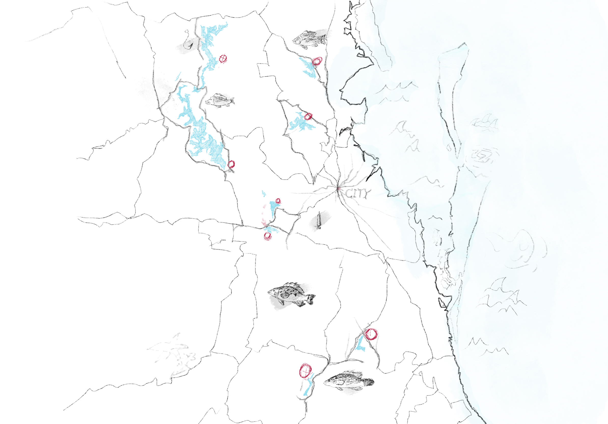

Mt Crosby Weir
Offers a wealth of fishing
and an attractive natural environment suitable for both novice and experienced anglers.
Fishing is subject to local fishing license requirements and as river levels may vary depending on
seasonal and weather conditions, it is recommended that you visit this website for water level
and weather information.
Caboolture River Weir
Located on the Cabulcher River in
Queensland is a peaceful fishing location. The freshwater areas here provide anglers with an abundance
of fishing and are particularly good for freshwater fish such as Australian perch and yellowtail snapper.
The water quality of the Caboucher River is good, with dense vegetation along its banks, and the ecology
around the river basin is ideal for recreational fishing.
Wivenhoe Dam
Located on the Brisbane River in Queensland,
it is a popular freshwater fishing spot with key species including Australian perch and yellowtail snapper.
With its expansive waters and beautiful natural scenery, it is perfect for fishing, boating and other water
activities. The reservoir's abundance of fish and convenient public facilities make it an ideal place for
recreational and fishing enthusiasts.
North Pine Dam
Located in the Morton Bay region of Queensland,
this is a popular freshwater fishing spot. The reservoir is known for its abundant fish stocks, with key target
species including yellowtail snapper and silver perch.
The tranquil setting, expansive waters and surrounding natural beauty make it an ideal place for fishing, boating
and picnicking.
Somerset Dam
Located in Queensland, it is a renowned freshwater
fishing and recreational resort. This large reservoir is known for its abundant freshwater fish stocks, especially
yellowtail snapper and Mary River trout, which attracts many fishing enthusiasts. The area is not only great for
fishing, but also offers a wealth of water sports such as boating, water skiing and jet skiing.
The amenities around Somerset Dam are excellent with camping and picnic areas, perfect for families and groups
to relax.
Logan River
Located in south-east Queensland, it is an important
river that attracts anglers with its diverse fishing resources. The lower reaches and estuaries of the river are
particularly well suited to fishing, with common species including flat whiting, walleye snapper and shark species.
The river's rich ecosystem and good fishing conditions make it suitable for both fresh and saltwater fishing.
Albert River
Located in south-east Queensland, the Albert River
is a tributary of the Logan River and has an abundance of fresh and saltwater fishing. Common species include flat
whiting, walleye snapper and other native fish, and the Albert River passes through a number of nature reserves and
farmland in a tranquil environment that is ideal for fishing and water sports.
Bremer River
Bremer River is a major river in south-east Queensland, which feeds
into the Brisbane River, the region's freshwater and saltwater junction. The upstream area of the river is mostly
freshwater, making it suitable for anglers to catch native freshwater species such as Australian perch.
However, as it flows through an urban area, the water quality in some sections of the river may be affected by industrial
and municipal drainage. When fishing, it is recommended to choose clean headwaters or sections of the river with good
natural environmental protection, as well as to ensure that you have a valid fishing license and comply with local fishing
regulations.